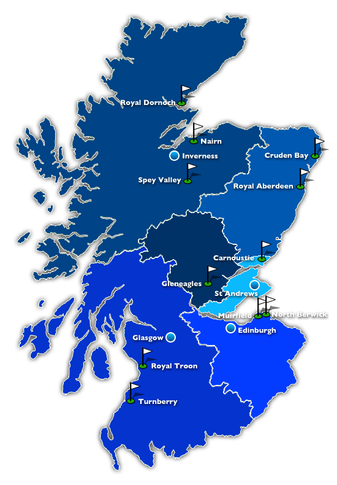
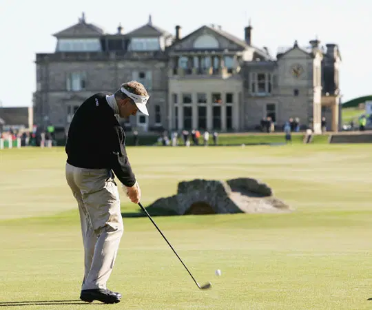

El golf es un deporte que ha evolucionado a lo largo de los siglos y tiene profundas raíces en Escocia. Aunque el origen exacto del golf es incierto y objeto de debate, se cree que se jugaba en Escocia desde el siglo XV. Algunos argumentan que se inspiró en juegos antiguos similares jugados en otras partes del mundo, mientras que otros lo atribuyen directamente a la creatividad escocesa. Los primeros juegos de golf se practicaban en terrenos abiertos y dunas naturales en las tierras altas escocesas. No había reglas formalizadas ni campos diseñados específicamente para el golf en sus primeros días. En cambio, los jugadores usaban palos para golpear una pelota y llevarla desde un punto de inicio hasta un hoyo improvisado en el menor número de golpes posible.
Uno de los hitos más importantes en la historia del golf ocurrió en 1754 cuando se fundó el Royal and Ancient Golf Club de St. Andrews en Escocia. Este club se considera uno de los más antiguos del mundo y desempeñó un papel fundamental en la creación de reglas y estándares para el golf. En 1744, las "Reglas de St. Andrews" fueron establecidas, sentando las bases para las reglas modernas del golf. Estas reglas incluían aspectos como la longitud del campo, el número de hoyos y la forma en que se debía jugar la pelota. A medida que las reglas del golf se estandarizaron, el deporte comenzó a expandirse por todo el mundo. Inglaterra fue uno de los primeros países en adoptar el golf fuera de Escocia, y se crearon clubes y campos de golf en toda Gran Bretaña. En 1786, se fundó el South Carolina Golf Club en Charleston, Estados Unidos, lo que marcó el comienzo del golf en América. A lo largo del siglo XIX, el golf continuó su expansión internacional, llegando a lugares como Australia, Canadá y Sudáfrica. A medida que se establecían clubes y campos de golf en todo el mundo, el deporte comenzó a desarrollarse más allá de un simple pasatiempo y se convirtió en una actividad competitiva. En el siglo XX, el golf se convirtió en un deporte verdaderamente global, con la creación de importantes torneos y competiciones en diferentes países. Eventos como el Abierto Británico y el Abierto de Estados Unidos se convirtieron en pilares del golf profesional, atrayendo a los mejores golfistas de todo el mundo.
En resumen, la historia del golf es una narración de evolución desde sus humildes comienzos en Escocia hasta convertirse en un deporte globalmente popular con una rica tradición y una comunidad apasionada de jugadores y aficionados en todo el mundo.